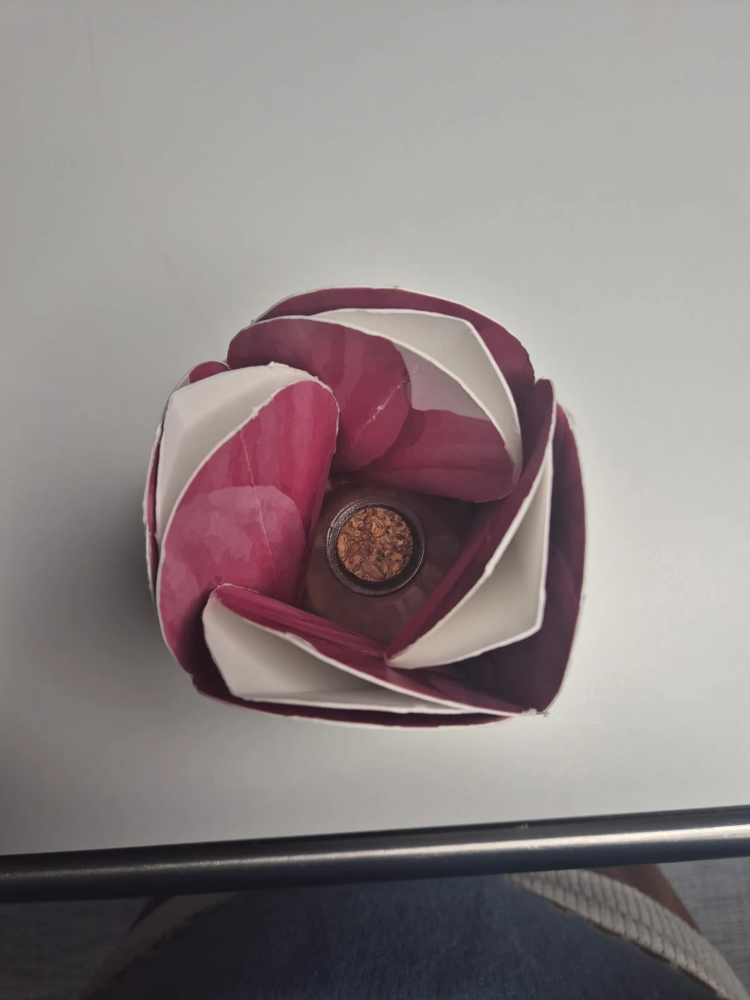
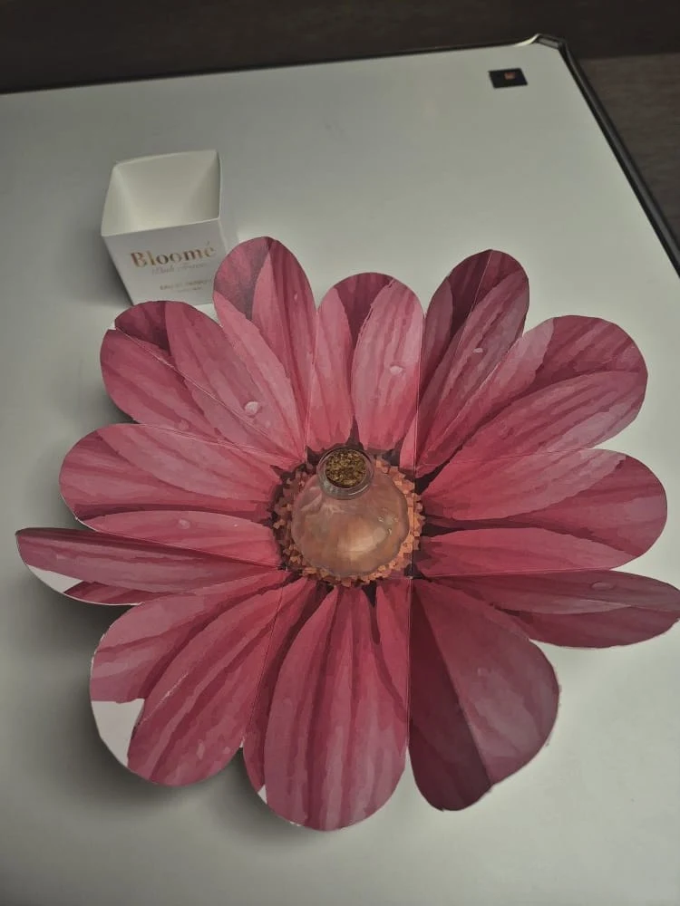
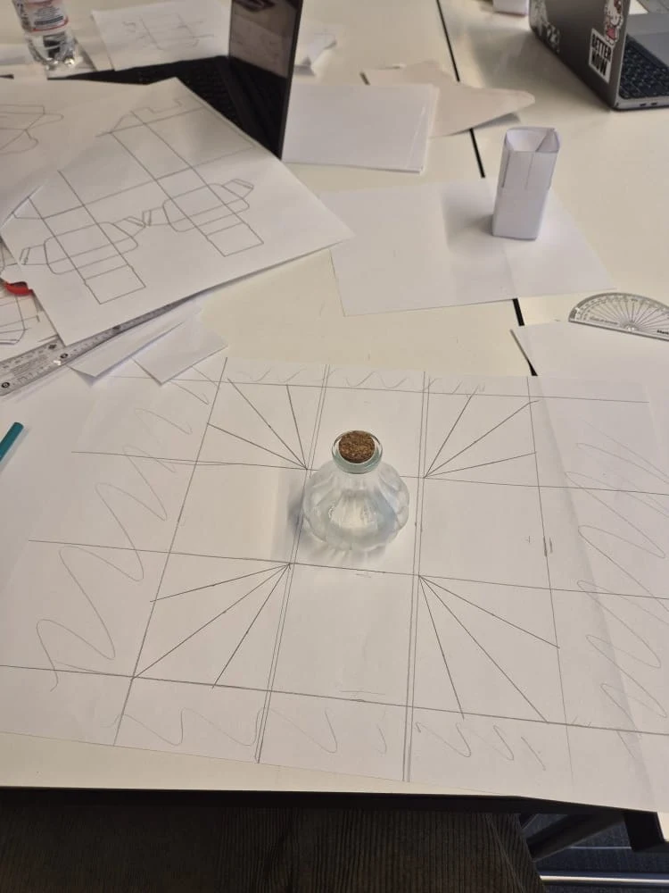
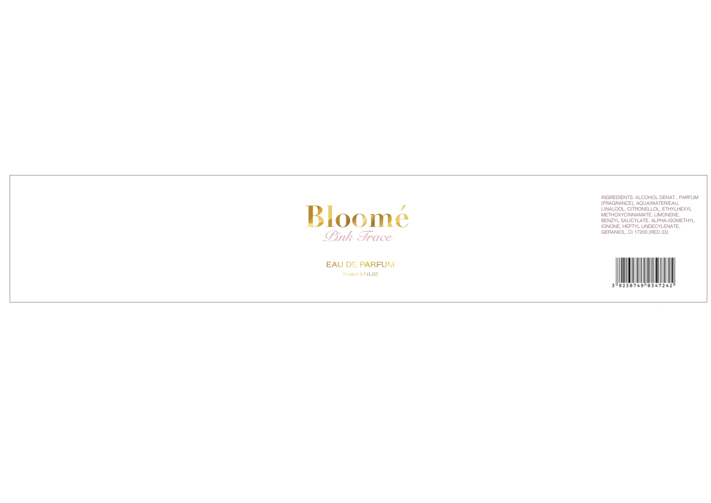

Floral identity
The flower motif connects the product and package.
University project
A floral perfume-packaging exploration combining a printed identity with a physical opening experience.

01 · THE CHALLENGE
This project explores how a perfume package can express a floral identity through both graphics and structure. The work includes label artwork, a package layout, and physical experiments.
PROJECT GOALCreate a recognizable floral presentation for the Pink Trace perfume concept.
02 · UNDERSTANDING

The photographs show the flower motif extending into the package’s opening. The structure becomes part of the way the product is revealed.
03 · EXPLORATION

Flat layouts and paper construction experiments led to a folded package and a flower-based product presentation.
04 · FINAL SOLUTION

The flower motif connects the product and package.
Folded paper adds a physical moment of discovery.
The label extends the identity to the bottle.
05 · REFLECTION
The project brings together label design and physical packaging prototypes. The visual sequence shows the exploration from layout to assembled form.